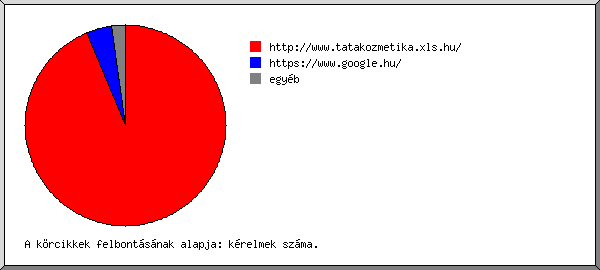

Web Szerver Statisztika: [www.tatakozmetika.xls.hu]
Web Szerver Statisztika: [www.tatakozmetika.xls.hu]
Futás kezdete pén, 2015. okt. 16. 01:58.
Kérelmek analizálva: kedd, 2015. szept. 01. 11:50 - csüt, 2015. okt. 15. 01:55 (43,59 nap).
Web Szerver Statisztika: [www.tatakozmetika.xls.hu]Futás kezdete pén, 2015. okt. 16. 01:58.
Kérelmek analizálva: kedd, 2015. szept. 01. 11:50 - csüt, 2015. okt. 15. 01:55 (43,59 nap).
(Ugrás: Oldal teteje | Általános összesítés | Éves Jelentés | Havi jelentés | Heti jelentés | Napi jelentés | Napi összesítés | Óránkénti összesítés | Domain szerinti jelentés | Szervezet szerinti jelentés | Host szerinti jelentés | Hivatkozó site-ok jelentése | Keresett kifejezések szerinti jelentés | Böngészõk szerinti összesítés | A böngészõ operációs rendszere szerinti jelentés | Fájltípus szerinti jelentés | Könyvtár szerinti jelentés | Kérelem szerinti jelentés)
A zárójeles számok utalnak: 7 nap 2015. okt. 16. 01:58.
Összes sikeres kérelem: 642 (36)
Átlagos sikeres napi kérelem: 14 (5)
Összes sikeres oldal kérelem: 168 (15)
Átlagos sikeres napi oldal kérelem: 3 (2)
Sikertelen kérelem: 6 (0)
Átirányított kérelem: 21 (3)
Különbözõ kért fájlok: 83 (12)
Különbözõ kiszolgált host-ok: 105 (19)
Átvitt adat: 8,22 megabyte (344,68 kilobyte)
Átlagos napi adatátvitel: 193,10 kilobyte (49,24 kilobyte)
(Ugrás: Oldal teteje | Általános összesítés | Éves Jelentés | Havi jelentés | Heti jelentés | Napi jelentés | Napi összesítés | Óránkénti összesítés | Domain szerinti jelentés | Szervezet szerinti jelentés | Host szerinti jelentés | Hivatkozó site-ok jelentése | Keresett kifejezések szerinti jelentés | Böngészõk szerinti összesítés | A böngészõ operációs rendszere szerinti jelentés | Fájltípus szerinti jelentés | Könyvtár szerinti jelentés | Kérelem szerinti jelentés)
Minden egység ( ) 4 oldal kérelmeit vagy egy részét jelképezi.
) 4 oldal kérelmeit vagy egy részét jelképezi.
| év | kér. | oldal | |
|---|---|---|---|
| 2015 | 642 | 168 |    |
Legaktívabb év: 2015 (168 oldal kérelmeit).
(Ugrás: Oldal teteje | Általános összesítés | Éves Jelentés | Havi jelentés | Heti jelentés | Napi jelentés | Napi összesítés | Óránkénti összesítés | Domain szerinti jelentés | Szervezet szerinti jelentés | Host szerinti jelentés | Hivatkozó site-ok jelentése | Keresett kifejezések szerinti jelentés | Böngészõk szerinti összesítés | A böngészõ operációs rendszere szerinti jelentés | Fájltípus szerinti jelentés | Könyvtár szerinti jelentés | Kérelem szerinti jelentés)
Minden egység () 3 oldal kérelmeit vagy egy részét jelképezi.
| hónap | kér. | oldal | |
|---|---|---|---|
| 2015. szept. | 429 | 102 | |
| 2015. okt . | 213 | 66 |   |
Legforgalmasabb hónap: 2015. szept. (102 oldal kérelmeit).
(Ugrás: Oldal teteje | Általános összesítés | Éves Jelentés | Havi jelentés | Heti jelentés | Napi jelentés | Napi összesítés | Óránkénti összesítés | Domain szerinti jelentés | Szervezet szerinti jelentés | Host szerinti jelentés | Hivatkozó site-ok jelentése | Keresett kifejezések szerinti jelentés | Böngészõk szerinti összesítés | A böngészõ operációs rendszere szerinti jelentés | Fájltípus szerinti jelentés | Könyvtár szerinti jelentés | Kérelem szerinti jelentés)
Minden egység () 2 oldal kérelmeit vagy egy részét jelképezi.
| hét eleje | kér. | oldal | |
|---|---|---|---|
| 15.aug .30 | 57 | 12 | |
| 15.szept. 6 | 93 | 24 | |
| 15.szept.13 | 109 | 29 | |
| 15.szept.20 | 133 | 26 | |
| 15.szept.27 | 43 | 15 | |
| 15.okt . 4 | 180 | 51 | |
| 15.okt .11 | 27 | 11 | |
Legforgalmasabb hét: hét eleje 15.okt. 4 (51 oldal kérelmeit).
(Ugrás: Oldal teteje | Általános összesítés | Éves Jelentés | Havi jelentés | Heti jelentés | Napi jelentés | Napi összesítés | Óránkénti összesítés | Domain szerinti jelentés | Szervezet szerinti jelentés | Host szerinti jelentés | Hivatkozó site-ok jelentése | Keresett kifejezések szerinti jelentés | Böngészõk szerinti összesítés | A böngészõ operációs rendszere szerinti jelentés | Fájltípus szerinti jelentés | Könyvtár szerinti jelentés | Kérelem szerinti jelentés)
Minden egység () 1 oldal kérelmet.
| dátum | kér. | oldal | |
|---|---|---|---|
| 15.szept. 4 | 15 | 5 | |
| 15.szept. 5 | 4 | 1 | |
| 15.szept. 6 | 2 | 1 | |
| 15.szept. 7 | 51 | 6 | |
| 15.szept. 8 | 10 | 3 | |
| 15.szept. 9 | 5 | 3 | |
| 15.szept.10 | 12 | 5 | |
| 15.szept.11 | 9 | 5 | |
| 15.szept.12 | 4 | 1 | |
| 15.szept.13 | 33 | 9 | |
| 15.szept.14 | 7 | 1 | |
| 15.szept.15 | 4 | 2 | |
| 15.szept.16 | 0 | 0 | |
| 15.szept.17 | 37 | 9 | |
| 15.szept.18 | 20 | 5 | |
| 15.szept.19 | 8 | 3 | |
| 15.szept.20 | 3 | 2 | |
| 15.szept.21 | 41 | 5 | |
| 15.szept.22 | 61 | 7 | |
| 15.szept.23 | 16 | 5 | |
| 15.szept.24 | 4 | 2 | |
| 15.szept.25 | 5 | 4 | |
| 15.szept.26 | 3 | 1 | |
| 15.szept.27 | 4 | 3 | |
| 15.szept.28 | 11 | 2 | |
| 15.szept.29 | 12 | 3 | |
| 15.szept.30 | 10 | 3 | |
| 15.okt . 1 | 4 | 2 | |
| 15.okt . 2 | 2 | 2 | |
| 15.okt . 3 | 0 | 0 | |
| 15.okt . 4 | 16 | 5 | |
| 15.okt . 5 | 6 | 5 | |
| 15.okt . 6 | 111 | 26 | |
| 15.okt . 7 | 33 | 8 | |
| 15.okt . 8 | 4 | 2 | |
| 15.okt . 9 | 7 | 3 | |
| 15.okt .10 | 3 | 2 | |
| 15.okt .11 | 4 | 1 | |
| 15.okt .12 | 1 | 0 | |
| 15.okt .13 | 1 | 1 | |
| 15.okt .14 | 13 | 8 | |
| 15.okt .15 | 8 | 1 | |
Legforgalmasabb nap: 15.okt. 6 (26 oldal kérelmeit).
(Ugrás: Oldal teteje | Általános összesítés | Éves Jelentés | Havi jelentés | Heti jelentés | Napi jelentés | Napi összesítés | Óránkénti összesítés | Domain szerinti jelentés | Szervezet szerinti jelentés | Host szerinti jelentés | Hivatkozó site-ok jelentése | Keresett kifejezések szerinti jelentés | Böngészõk szerinti összesítés | A böngészõ operációs rendszere szerinti jelentés | Fájltípus szerinti jelentés | Könyvtár szerinti jelentés | Kérelem szerinti jelentés)
Minden egység () 1 oldal kérelmet.
| nap | kér. | oldal | |
|---|---|---|---|
| vas | 62 | 21 | |
| hét | 117 | 19 | |
| kedd | 233 | 45 | |
| sze | 80 | 29 | |
| csüt | 70 | 22 | |
| pén | 58 | 24 | |
| szo | 22 | 8 | |
(Ugrás: Oldal teteje | Általános összesítés | Éves Jelentés | Havi jelentés | Heti jelentés | Napi jelentés | Napi összesítés | Óránkénti összesítés | Domain szerinti jelentés | Szervezet szerinti jelentés | Host szerinti jelentés | Hivatkozó site-ok jelentése | Keresett kifejezések szerinti jelentés | Böngészõk szerinti összesítés | A böngészõ operációs rendszere szerinti jelentés | Fájltípus szerinti jelentés | Könyvtár szerinti jelentés | Kérelem szerinti jelentés)
Minden egység () 1 oldal kérelmet.
| ó. | kér. | oldal | |
|---|---|---|---|
| 0 | 13 | 8 | |
| 1 | 20 | 9 | |
| 2 | 4 | 1 | |
| 3 | 5 | 3 | |
| 4 | 11 | 7 | |
| 5 | 5 | 2 | |
| 6 | 7 | 4 | |
| 7 | 12 | 3 | |
| 8 | 20 | 6 | |
| 9 | 46 | 12 | |
| 10 | 30 | 8 | |
| 11 | 12 | 5 | |
| 12 | 44 | 9 | |
| 13 | 45 | 10 | |
| 14 | 38 | 7 | |
| 15 | 14 | 4 | |
| 16 | 85 | 23 | |
| 17 | 6 | 3 | |
| 18 | 55 | 10 | |
| 19 | 26 | 8 | |
| 20 | 30 | 4 | |
| 21 | 8 | 4 | |
| 22 | 57 | 10 | |
| 23 | 49 | 8 | |
(Ugrás: Oldal teteje | Általános összesítés | Éves Jelentés | Havi jelentés | Heti jelentés | Napi jelentés | Napi összesítés | Óránkénti összesítés | Domain szerinti jelentés | Szervezet szerinti jelentés | Host szerinti jelentés | Hivatkozó site-ok jelentése | Keresett kifejezések szerinti jelentés | Böngészõk szerinti összesítés | A böngészõ operációs rendszere szerinti jelentés | Fájltípus szerinti jelentés | Könyvtár szerinti jelentés | Kérelem szerinti jelentés)
domain listázása, rendezve: forgalom.
| kér. | %byte | domain |
|---|---|---|
| 420 | 80,03% | .hu (Hungary) |
| 168 | 13,58% | .com (Commercial) |
| 41 | 3,71% | [feloldatlan IP-címek] |
| 7 | 2,61% | [ismeretlen domain] |
| 6 | 0,06% | .net (Networks) |
(Ugrás: Oldal teteje | Általános összesítés | Éves Jelentés | Havi jelentés | Heti jelentés | Napi jelentés | Napi összesítés | Óránkénti összesítés | Domain szerinti jelentés | Szervezet szerinti jelentés | Host szerinti jelentés | Hivatkozó site-ok jelentése | Keresett kifejezések szerinti jelentés | Böngészõk szerinti összesítés | A böngészõ operációs rendszere szerinti jelentés | Fájltípus szerinti jelentés | Könyvtár szerinti jelentés | Kérelem szerinti jelentés)
Az elsõ 20 szervezet listázása a következõ szerint: kérelmek száma, rendezve: kérelmek száma.
| kér. | %byte | szervezet |
|---|---|---|
| 188 | 42,36% | broadband.hu |
| 89 | 13,79% | opticon.hu |
| 70 | 7,00% | googlebot.com |
| 54 | 2,07% | baidu.com |
| 42 | 5,19% | kabelnet.hu |
| 40 | 8,37% | telekom.hu |
| 31 | 2,82% | prtelecom.hu |
| 28 | 4,09% | google.com |
| 26 | 3,17% | 194.24 |
| 12 | 0,22% | ahrefs.com |
| 11 | 3,17% | vodafone.hu |
| 9 | 2,02% | invitel.hu |
| 7 | 2,61% | [ismeretlen domain] |
| 7 | 1,87% | z-net.hu |
| 5 | 0,04% | yahoo.net |
| 4 | 0,13% | 162.243 |
| 4 | 0,13% | 104 |
| 4 | 0,13% | 107 |
| 2 | 0,14% | trendmicro.com |
| 2 | 0,30% | digikabel.hu |
| 7 | 0,39% | [nincs felsorolva: 6 szervezet] |
(Ugrás: Oldal teteje | Általános összesítés | Éves Jelentés | Havi jelentés | Heti jelentés | Napi jelentés | Napi összesítés | Óránkénti összesítés | Domain szerinti jelentés | Szervezet szerinti jelentés | Host szerinti jelentés | Hivatkozó site-ok jelentése | Keresett kifejezések szerinti jelentés | Böngészõk szerinti összesítés | A böngészõ operációs rendszere szerinti jelentés | Fájltípus szerinti jelentés | Könyvtár szerinti jelentés | Kérelem szerinti jelentés)
Az elsõ 50 host listázása a következõ szerint: kérelmek száma, betûrend szerint rendezve.
| kér. | %byte | host |
|---|---|---|
| 4 | 0,13% | 104.131.219.237 |
| 4 | 0,13% | 107.170.32.181 |
| 4 | 0,13% | 162.243.122.43 |
| 26 | 3,17% | 194.24.1.8 |
| 2 | 0,07% | 208.115.113.88 |
| 3 | 1,31% | 208.184.112.75.available |
| 4 | 0,13% | boson133.ahrefs.com |
| 2 | 0,13% | baiduspider-180-76-15-13.crawl.baidu.com |
| 4 | 0,14% | baiduspider-180-76-15-137.crawl.baidu.com |
| 2 | 0,13% | baiduspider-180-76-15-144.crawl.baidu.com |
| 3 | 0,15% | baiduspider-180-76-15-153.crawl.baidu.com |
| 4 | 0,16% | baiduspider-180-76-15-156.crawl.baidu.com |
| 2 | 0,10% | baiduspider-180-76-15-16.crawl.baidu.com |
| 2 | 0,11% | baiduspider-180-76-15-19.crawl.baidu.com |
| 2 | 0,11% | baiduspider-180-76-15-20.crawl.baidu.com |
| 2 | 0,11% | baiduspider-180-76-15-22.crawl.baidu.com |
| 3 | 0,07% | baiduspider-180-76-15-28.crawl.baidu.com |
| 2 | 0,11% | baiduspider-180-76-15-6.crawl.baidu.com |
| 4 | 0,70% | google-proxy-66-249-81-217.google.com |
| 3 | 1,16% | google-proxy-66-249-81-223.google.com |
| 6 | 0,23% | google-proxy-66-249-93-194.google.com |
| 7 | 1,81% | google-proxy-66-249-93-198.google.com |
| 4 | 0,09% | google-proxy-66-249-93-202.google.com |
| 5 | 0,06% | crawl-66-249-64-60.googlebot.com |
| 7 | 2,52% | crawl-66-249-64-65.googlebot.com |
| 5 | 0,14% | crawl-66-249-64-70.googlebot.com |
| 4 | 0,16% | crawl-66-249-67-139.googlebot.com |
| 6 | 0,22% | crawl-66-249-67-148.googlebot.com |
| 5 | 0,22% | crawl-66-249-67-157.googlebot.com |
| 4 | 0,18% | crawl-66-249-67-43.googlebot.com |
| 2 | 0,19% | crawl-66-249-69-5.googlebot.com |
| 6 | 1,45% | crawl-66-249-75-139.googlebot.com |
| 7 | 0,18% | crawl-66-249-75-148.googlebot.com |
| 8 | 1,37% | crawl-66-249-75-157.googlebot.com |
| 6 | 0,16% | crawl-66-249-78-176.googlebot.com |
| 3 | 1,24% | ns348917.ip-91-121-169.eu |
| 112 | 26,15% | catv-80-98-142-252.catv.broadband.hu |
| 76 | 16,21% | catv-80-98-219-68.catv.broadband.hu |
| 8 | 1,87% | 87.97.3.115.pool.invitel.hu |
| 42 | 5,19% | host-94-248-210-54.kabelnet.hu |
| 89 | 13,79% | 91-137-135-221.opticon.hu |
| 31 | 2,82% | host-88-132-136-181.prtelecom.hu |
| 6 | mx4.telekom.hu | |
| 12 | 2,63% | 05bbc873.dsl.pool.telekom.hu |
| 7 | 1,87% | 05bbd9fa.dsl.pool.telekom.hu |
| 8 | 1,95% | 2e6b9d9b.dsl.pool.telekom.hu |
| 6 | 1,78% | 254c3996.nat.pool.telekom.hu |
| 10 | 3,15% | apn-185-10-126-108.vodafone.hu |
| 7 | 1,87% | 87.229.88.232.z-net.hu |
| 5 | 0,04% | b115344.yse.yahoo.net |
| 56 | 2,21% | [nincs felsorolva: 55 host] |
(Ugrás: Oldal teteje | Általános összesítés | Éves Jelentés | Havi jelentés | Heti jelentés | Napi jelentés | Napi összesítés | Óránkénti összesítés | Domain szerinti jelentés | Szervezet szerinti jelentés | Host szerinti jelentés | Hivatkozó site-ok jelentése | Keresett kifejezések szerinti jelentés | Böngészõk szerinti összesítés | A böngészõ operációs rendszere szerinti jelentés | Fájltípus szerinti jelentés | Könyvtár szerinti jelentés | Kérelem szerinti jelentés)

hivatkozó site listázása, rendezve: kérelmek száma.
| kér. | site |
|---|---|
| 399 | http://www.tatakozmetika.xls.hu/ |
| 18 | https://www.google.hu/ |
| 3 | http://tatakozmetika.xls.hu/ |
| 2 | http://www.google.com/ |
| 1 | http://www.bing.com/ |
| 1 | http://www.google.com.my/ |
| 1 | http://www.google.hu/ |
| 1 | http://www.google.de/ |
(Ugrás: Oldal teteje | Általános összesítés | Éves Jelentés | Havi jelentés | Heti jelentés | Napi jelentés | Napi összesítés | Óránkénti összesítés | Domain szerinti jelentés | Szervezet szerinti jelentés | Host szerinti jelentés | Hivatkozó site-ok jelentése | Keresett kifejezések szerinti jelentés | Böngészõk szerinti összesítés | A böngészõ operációs rendszere szerinti jelentés | Fájltípus szerinti jelentés | Könyvtár szerinti jelentés | Kérelem szerinti jelentés)
keresett kifejezés listázása, rendezve: kérelmek száma.
| kér. | keresett kulcsszó |
|---|---|
| 1 | anything |
(Ugrás: Oldal teteje | Általános összesítés | Éves Jelentés | Havi jelentés | Heti jelentés | Napi jelentés | Napi összesítés | Óránkénti összesítés | Domain szerinti jelentés | Szervezet szerinti jelentés | Host szerinti jelentés | Hivatkozó site-ok jelentése | Keresett kifejezések szerinti jelentés | Böngészõk szerinti összesítés | A böngészõ operációs rendszere szerinti jelentés | Fájltípus szerinti jelentés | Könyvtár szerinti jelentés | Kérelem szerinti jelentés)
böngészõ listázása legalább 1 oldal kérelmet, rendezve: oldalkérelem-szám.
| srsz. | kér. | oldal | böngészõ |
|---|---|---|---|
| 1 | 143 | 81 | Netscape (compatible) |
| 2 | 298 | 40 | Safari |
| 278 | 35 | Safari/537 | |
| 8 | 2 | Safari/534 | |
| 11 | 2 | Safari/600 | |
| 1 | 1 | Safari/601 | |
| 3 | 149 | 28 | Firefox |
| 112 | 26 | Firefox/41 | |
| 28 | 2 | Firefox/40 | |
| 4 | 10 | 6 | Google favicon |
| 5 | 6 | 6 | Jakarta Commons-HttpClient |
| 6 | 6 | Jakarta Commons-HttpClient/3 | |
| 6 | 8 | 6 | MSIE |
| 6 | 4 | MSIE/8 | |
| 2 | 2 | MSIE/7 | |
| 7 | 26 | 1 | Mozilla |
| 2 | 0 | [nincs felsorolva: 2 böngészõ] |
(Ugrás: Oldal teteje | Általános összesítés | Éves Jelentés | Havi jelentés | Heti jelentés | Napi jelentés | Napi összesítés | Óránkénti összesítés | Domain szerinti jelentés | Szervezet szerinti jelentés | Host szerinti jelentés | Hivatkozó site-ok jelentése | Keresett kifejezések szerinti jelentés | Böngészõk szerinti összesítés | A böngészõ operációs rendszere szerinti jelentés | Fájltípus szerinti jelentés | Könyvtár szerinti jelentés | Kérelem szerinti jelentés)
op.rsz. listázása, rendezve: oldalkérelem-szám.
| srsz. | kér. | oldal | op.rsz. |
|---|---|---|---|
| 1 | 361 | 58 | Windows |
| 112 | 26 | Windows NT | |
| 226 | 25 | ismeretlen verziójú Windows | |
| 23 | 7 | Windows XP | |
| 2 | 106 | 53 | ismeretlen operációs rendszer |
| 3 | 64 | 43 | keresõrobotok |
| 4 | 99 | 11 | Unix |
| 99 | 11 | Linux | |
| 5 | 12 | 3 | Macintosh |
(Ugrás: Oldal teteje | Általános összesítés | Éves Jelentés | Havi jelentés | Heti jelentés | Napi jelentés | Napi összesítés | Óránkénti összesítés | Domain szerinti jelentés | Szervezet szerinti jelentés | Host szerinti jelentés | Hivatkozó site-ok jelentése | Keresett kifejezések szerinti jelentés | Böngészõk szerinti összesítés | A böngészõ operációs rendszere szerinti jelentés | Fájltípus szerinti jelentés | Könyvtár szerinti jelentés | Kérelem szerinti jelentés)
kiterjesztés listázása legalább 0,1% forgalommal, rendezve: forgalom.
| kér. | %byte | kiterjesztés |
|---|---|---|
| 76 | 63,49% | .js |
| 62 | 14,38% | .jpg |
| 74 | 8,08% | .css |
| 161 | 5,34% | [könyvtárak] |
| 100 | 5,22% | .png |
| 93 | 2,82% | .json |
| 11 | 0,40% | .gif |
| 65 | 0,28% | [nincs felsorolva: 6 kiterjesztés] |
(Ugrás: Oldal teteje | Általános összesítés | Éves Jelentés | Havi jelentés | Heti jelentés | Napi jelentés | Napi összesítés | Óránkénti összesítés | Domain szerinti jelentés | Szervezet szerinti jelentés | Host szerinti jelentés | Hivatkozó site-ok jelentése | Keresett kifejezések szerinti jelentés | Böngészõk szerinti összesítés | A böngészõ operációs rendszere szerinti jelentés | Fájltípus szerinti jelentés | Könyvtár szerinti jelentés | Kérelem szerinti jelentés)
könyvtar listázása legalább 0,01% forgalommal, rendezve: forgalom.
| kér. | %byte | könyvtár |
|---|---|---|
| 354 | 70,43% | [fõkönyvtár] |
| 60 | 10,71% | /images/ |
| 40 | 7,14% | /js/ |
| 32 | 4,32% | /files/ |
| 40 | 3,23% | /szolgaltatasaink/ |
| 25 | 1,15% | /admin/ |
| 7 | 0,99% | /analog/ |
| 23 | 0,76% | /themes/ |
| 41 | 0,64% | /kapcsolat/ |
| 17 | 0,63% | /stat/ |
| 3 | 0,01% | [nincs felsorolva: 1 könyvtár] |
(Ugrás: Oldal teteje | Általános összesítés | Éves Jelentés | Havi jelentés | Heti jelentés | Napi jelentés | Napi összesítés | Óránkénti összesítés | Domain szerinti jelentés | Szervezet szerinti jelentés | Host szerinti jelentés | Hivatkozó site-ok jelentése | Keresett kifejezések szerinti jelentés | Böngészõk szerinti összesítés | A böngészõ operációs rendszere szerinti jelentés | Fájltípus szerinti jelentés | Könyvtár szerinti jelentés | Kérelem szerinti jelentés)
fájl listázása legalább 20 kérelem, rendezve: kérelmek száma.
| kér. | %byte | utolsó alkalom | fájl |
|---|---|---|---|
| 118 | 3,26% | 15.okt .15 01:55 | / |
| 68 | 7,25% | 15.okt .15 01:55 | /styles.css |
| 52 | 58,63% | 15.okt .15 01:55 | /javas.js |
| 44 | 0,81% | 15.szept.22 20:34 | /index.json |
| 41 | 0,06% | 15.okt .14 15:32 | /robots.txt |
| 32 | 4,32% | 15.okt .15 01:55 | /files/images/2015-07-31_13-30-27_(0).jpg |
| 28 | 0,29% | 15.okt .15 01:55 | /images/icon-fb.png |
| 27 | 0,36% | 15.szept.22 20:41 | /kapcsolat/index.json |
| 14 | 0,18% | 15.szept.22 20:41 | /kapcsolat/index.json?formsload=1 |
| 26 | 10,04% | 15.okt .15 01:55 | /images/top-bg.jpg |
| 22 | 0,66% | 15.okt .15 01:55 | /themes/default/images/favicon.png |
| 20 | 1,62% | 15.okt .14 20:13 | /szolgaltatasaink/ |
| 20 | 1,60% | 15.okt . 7 10:22 | /szolgaltatasaink/index.json |
| 144 | 11,09% | 15.okt .15 01:55 | [nincs felsorolva: 56 fájl] |